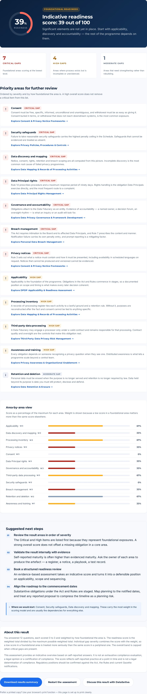

/
The full homepage, top to bottom
Hero with headline, dual CTA and the staged-commencement facts; the challenge framework grid; the six-step journey; ten advisory cards; the dark “why DataSattva” band; the assessment band; insights; and the closing CTA.
Click to open full size · 1440 × 9,225 px page
/readiness-assessment/
Working three-step assessment and results dashboard
Step 1 captures the organisation profile. Step 2 asks twelve weighted questions with a live answered count. The results view below is a real capture — score ring, capped readiness band, critical/high/moderate gap tiles and findings ordered by severity, each linking to the relevant service.

Click to open full size · priority findings, area scores, next steps and the download/restart controls
/dpdp-act-and-rules/
The DPDP Act & Rules explainer
The longest page on the site: framework, three-stage commencement, applicability, roles, fourteen obligation clusters (each with statutory reference and an operational-translation panel), penalties, the eleven-workstream roadmap, implementation challenges, glossary and the sources panel. Sticky sub-navigation moves between sections.
Click to open full size · 1440 × 19,257 px page
/services/ · /services/<slug>/
Services index and a detail page
Ten cards, each with an outcome line. The detail page (below, third-party risk) runs problem → why it matters → typical challenges → our approach → deliverables and outcomes → questions → contact CTA, with a sticky facts sidebar.
/insights/ · /insights/<slug>/
Editorial index and long-form article
Eight articles across seven categories, all visibly badged draft content — no author, date or statistic has been invented. The article layout uses a 72-character measure, callouts, lists and a related-articles block.
/about/ · /contact/
Credibility without invented credentials
The About page states the practice’s purpose and six working commitments, and says plainly which claims it does not make. The contact page carries the validated form, contact placeholders and handling notes.
390 × 844 viewport
Mobile layouts
Single-column stacking, menu drawer, full-width tap targets (48 px minimum). One deliberate choice worth your eye: on mobile the hero illustration sits above the headline. That is a two-line CSS change if you would rather lead with the words.